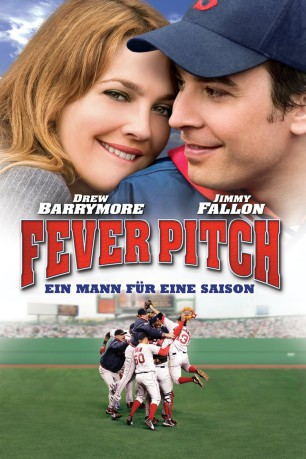

#10795 Fever Pitch
Alternativ: Mann für eine Saison, Ein
 
 IMDB-Wertung: 6.2 / 10
IMDB-Wertung: 6.2 / 10  Tomatometer: 65
Tomatometer: 65  Metascore: 56
Metascore: 56 
Der Lehrer Ben lebt für die Baseballmannschaft Boston Red Sox, deren Spiele er dank geerbter Dauerkarten immer von einem Ehrenplatz im Stadion verfolgt. Eines Tages verliebt er sich in die Karrierefrau Lindsey. Die Beziehung funktioniert gut, bis die Baseballsaison wieder anfängt.
Jahr: 2005
Dauer: 104 Minuten
FSK: 0
Land: USA Studio: Twentieth Century-FoxTonspuren: DD5.1 - ,
Untertitel:
Auflösung: 1080p (1920x824) Größe: 7372 MB
Genre: Drama, Komödie, Liebe, Sport
Regisseur:  Bobby Farrelly, Peter Farrelly
Bobby Farrelly, Peter Farrelly
Drehbuch: Lowell Ganz, Babaloo Mandel, Nick Hornby
Soundtrack: Craig Armstrong
Darsteller:
 Drew Barrymore als Lindsey
Drew Barrymore als Lindsey Jimmy Fallon als Ben
Jimmy Fallon als Ben- Jason Spevack als Ben - 1980
 Jack Kehler als Al
Jack Kehler als Al- Maureen Keiller als Viv
 Lenny Clarke als Uncle Carl
Lenny Clarke als Uncle Carl- Ione Skye als Molly
 KaDee Strickland als Robin
KaDee Strickland als Robin Marissa Jaret Winokur als Sarah
Marissa Jaret Winokur als Sarah- Evan Helmuth als Troy
- Brandon Craggs als Casey
- Brett Murphy als Ryan
- Greta Onieogou als Tammy
- Johnny Sneed als Chris
 James Sikking als Doug Meeks
James Sikking als Doug Meeks Willie Garson als Kevin
Willie Garson als Kevin- Armando Riesco als Gerard
 Zen Gesner als Steve
Zen Gesner als Steve Siobhan Fallon Hogan als Lana
Siobhan Fallon Hogan als Lana JoBeth Williams als Maureen Meeks
JoBeth Williams als Maureen Meeks- Charlotte Sullivan als Spin Instructor
- Lizz Alexander als Charlene
- Shary Guthrie als Christie
- Don Gavin als Cop
 Andrew Wilson als Grant Wade
Andrew Wilson als Grant Wade Martin Roach als Husband
Martin Roach als Husband- Johnny Damon als Johnny Damon
- Jackie Burroughs als Mrs. Warren
- Andrea Davis als Wife
- Sam Dissanayake als Mr. Abdo
- Harold Reynolds als Harold Reynolds
- Johnny Cicco als Bleacher Fan
- Brian Hayes Currie als Screaming Fan
 Danny Murphy als 1980's Vendor #1
Danny Murphy als 1980's Vendor #1 Daniel Greene als Waiter
Daniel Greene als Waiter- Joe Buck als Sportscaster
- Preston Thomas als 1980's Sox Player
- Scott Rosenberg als 1980's Sox Player
- Mark Ciardi als 1980's Sox Player
- Bob Sands als Landsdowne Street Fan
- A.B. Cassidy als East Boston School Kid
- Lucy Bidwell als East Boston School Kid
- Paul Palandjian als Fenway Security
 Eric Bruno Borgman als Red Sox Fan (uncredited)
Eric Bruno Borgman als Red Sox Fan (uncredited)- Janet Borgman als Red Sox Fan (uncredited)
 Brina als Crazed Sox Fan (uncredited)
Brina als Crazed Sox Fan (uncredited)- Jason Carlage als Red Sox Fan (uncredited)
- Rick Cordeiro als Red Sox Fan (uncredited)
- Patrick Cotnoir als Fan in Crowd (uncredited)
- John Currie als Fan (uncredited)
Datei: X:\2005(A-F)\Fever Pitch (2005, FSK0, 1920x824).mkv seit 08.03.2019
Festplatte: HD 2003-2004-2005(A-F)
 Es gibt insgesamt 49 Filme in der Gruppe '2005(A-F)'
Es gibt insgesamt 49 Filme in der Gruppe '2005(A-F)'